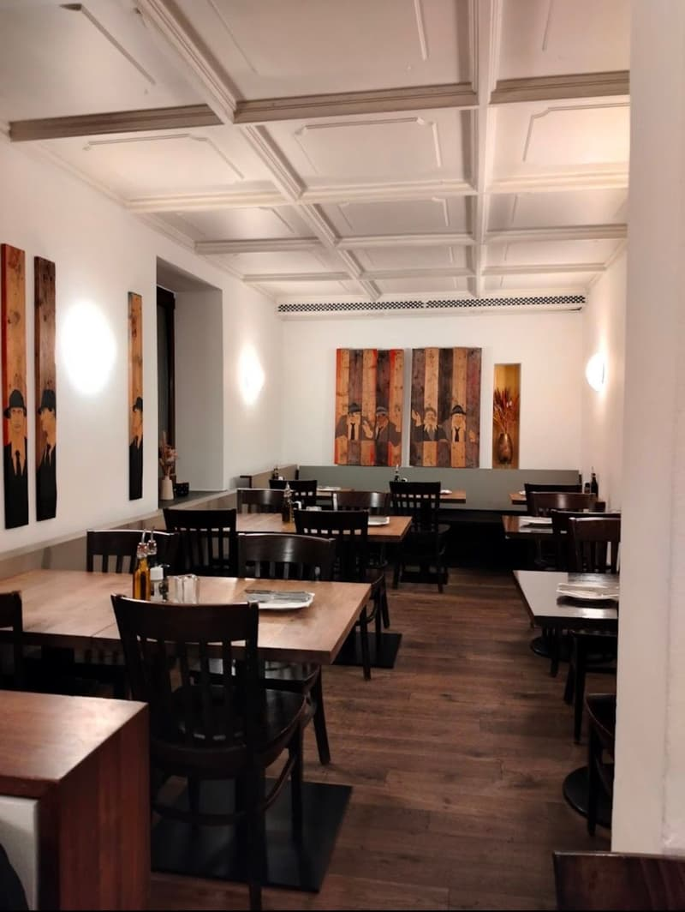
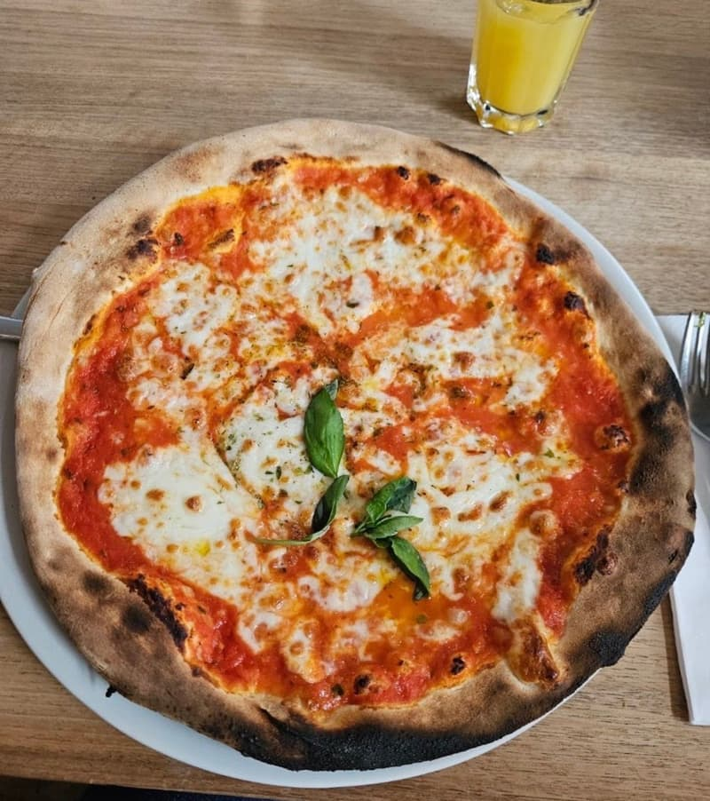
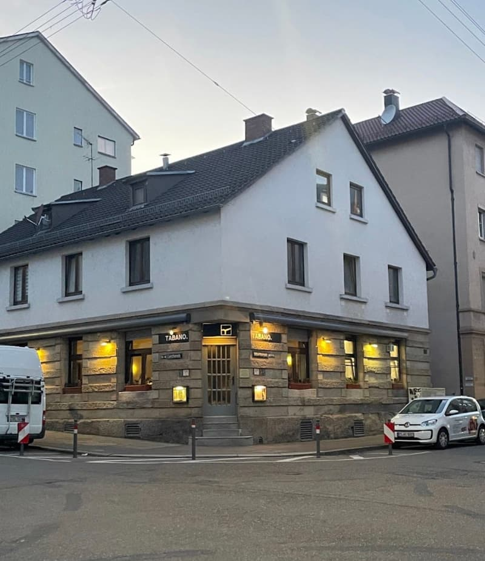

Pasta und Pizza
Frisch, lecker und großzügig portioniert: das Essen ist der meistgenannte Grund für fünf Sterne.
Hausgemachte Pasta, frischer Fisch und Pizza aus der Trattoria an der Silberburgstraße. Mittags schnell, abends mit Zeit.


Klassiker wie Margherita und Quattro Stagioni, mit knusprigem Rand.
Ravioli mit Ricotta und Trüffel in Salbeibutter oder Tagliatelle Mari e Monti.
Wolfsbarsch aus dem Ofen, Saltimbocca alla Romana, Filetto di Manzo.
Wechselnde Tagesgerichte von 11:30 bis 14:30 Uhr. Die aktuelle Tageskarte bekommen Sie bei uns im Restaurant.

Ein Eckhaus im Stuttgarter Westen, drinnen Holztische, Stuckdecke und warmes Licht. Seit Jahren kommen Nachbarn, Kolleginnen und Familien ins Tabano, zum schnellen Teller Pasta am Mittag oder für einen langen Abend mit Wein.
Mehr über unsBewertungen auf Google
Frisch, lecker und großzügig portioniert: das Essen ist der meistgenannte Grund für fünf Sterne.
Warmes Licht, Holztische und ein Lokal, in dem man gern länger sitzen bleibt.
Für viele Gäste der Lieblingsitaliener im Viertel, mittags wie abends.
Das loben Gäste in ihren Google-Bewertungen am häufigsten.
Tisch in einer Minute online reservieren. Für Gruppen ab 9 Personen und Feiern melden Sie sich gern direkt bei uns.
Silberburgstraße 62b, 70176 Stuttgart. Im Stuttgarter Westen, wenige Gehminuten vom Feuersee.
Küche bis 23:00 Uhr. An Feiertagen können die Zeiten abweichen.